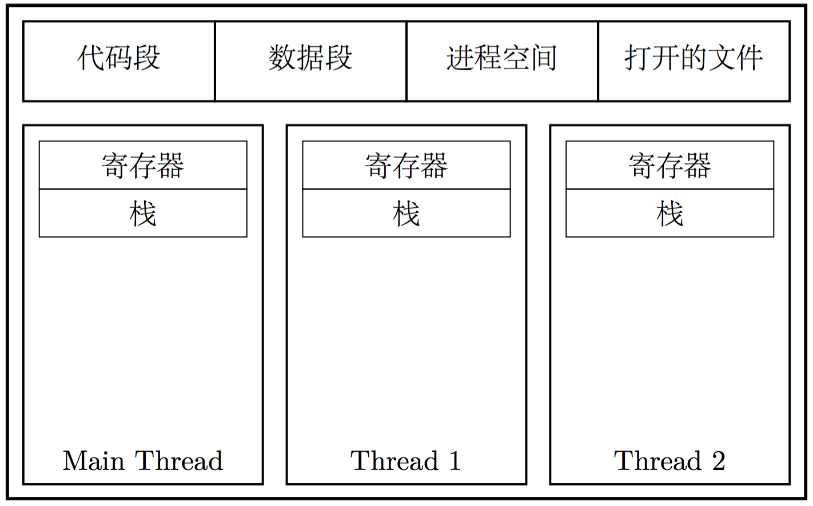
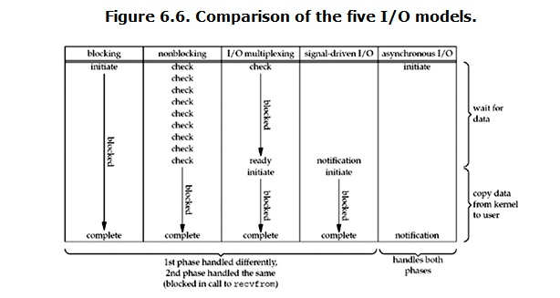

基础复习！
OS
进程线程协程
- 程序是一组指令的集合，它静态存储在磁盘
- 进程是程序运行的一个实例，进程是分配资源的基本单位
- 线程使操作系统进行任务调度的最小单元
- 线程共享一个虚拟内存空间及其中资源
- 协程是为非抢占式多任务产生子程序的计算机程序组件，协程允许不同入口点在不同位置暂停或开始执行程序
- 协没有线程的上下文切换消耗。协程的调度切换是用户手动切换的,因此更加灵活,因此又叫用户空间线程.
- 原子操作性。由于协程是用户调度的，所以不会出现执行一半的代码片段被强制中断了，因此无需原子操作锁。
一个进程由三部分组成：进程控制块PCB（Process Control Block），有关程序段，该程序段对其操作的数据结构集。
进程的PCB是系统感知进程的唯一实体。所以说到底，对进程进行操作，也可以理解为对PCB进行操作。 PCB是要常驻内存的。
系统把所有PCB组织在一起,并把他们放在内存的固定区域，构成PCB表。
可以通过链表队列或者索引表的方式组织就绪、阻塞、空闲的队列集合。
多进程：
- fork：会调用系统调用clone。父进程返回子进程ID，子进程返回0。
- exec：是一系列函数。会将当前进程空间清除并装载可执行文件执行。
- clone：指定位置开始执行，有选择的继承资源
多线程： - pthread
fork时只会保留调用主进程中调用fork的线程，需要使用pthread_atfork()清理环境。慎用多进程多线程混合的模型。
进程线程共享资源

进程拥有：
- 数据段（存放全局变量）
- 代码段
- 打开文件描述符的集合
- 内核栈
- 其他进程空间
- heap（从底向上）
线程拥有自己的：
- stack（从顶向下）
- 程序计数器（指示运行在其程序中的位置）
linux中进程和线程都视为task，因此进程可以共享地址空间（猜测由此实现线程）
！进程和线程最本质的区别，在于隔离与共享上的不同。
对于多进程来说，各个任务之间由操作系统保证了相互隔离。若要在多进程之间进行数据的传递、共享，必须要依赖操作系统信号、套接字、文件、管道等等。对于多线程来说，各个任务实际上处在同一进程空间，大多数的资源都能在内存空间中传递、共享，十分方便。但是另一方面，由于隔离不严，所以会出现十分棘手的「线程安全」问题。
进程间通信的开销较大，而线程安全的问题是可以解决的。
线程消息传递本质上是怎么样的(线程之间堆空间是共享的，所以在共享空间中放一个数据结构，大家都去访问这个结构)
进程之间传递的本质是什么呢(把进程A地址空间里的一段内存数据，借助操作系统的帮助，拷贝到进程B的地址空间中)
进程切换
- 保存处理机上下文，包括程序计数器和其他寄存器。
- 更新PCB信息。
- 把进程的PCB移入相应的队列，如就绪、在某事件阻塞等队列。
- 选择另一个进程执行，并更新其PCB。
- 更新内存管理的数据结构。
- 恢复处理机上下文。
进程间通讯/线程间同步
进程间通讯：
- 管道（pipe）有名管道（FIFO）
- 信号（signal）
- 消息队列
- 共享内存
- 信号量
- 套接字（socket)
线程间同步：
- 临界区（同一应用程序的线程间同步）
- 互斥量（mutex，为内核对象)
- 信号量
- 读写锁/共享互斥锁
- 条件变量
- 自旋锁
- 屏障（barrier）
用户态/内核态
使进程从用户态切换到内核态的方式包括时钟中断、I/O 中断、系统调用和异常。
内存
分页就是人为地在逻辑上将连续的内存空间，按照固定大小切分成一段一段。对于虚拟空间（虚拟内存）来说，这样切分出来的固定大小叫做「页（Page）」；对于物理内存来说，这样切分出来的固定大小叫做「页帧（Page Frame）」。
每个进程都有自己的虚拟空间（切换进程的时候切换MMU的页表即可），这些虚拟空间可以映射到物理内存的不同或者相同的位置。
！虚拟空间的优点如下：
- 允许虚拟内存大于物理内存
- 程序视角内存是连续的
进程虚拟地址和内核虚拟地址
内核空间虚拟地址是所有进程共享的，从效率角度看， 如果同样走四级页表翻译的流程，速度太慢；于是，内核在初始化时，就创建内核空间的映射（因为所有进程共享，有一份就够了），并且，采用的就是线性映射，而不是走页表翻译这种类似哈希表的方式。这样，内核地址的翻译，简化为一条偏移加减指令就行，相比走页表，效率大大提高。
在 Linux 刚引入的时候， i386 4G 的进程空间典型的是 3G user + 1G kernel 的划分。 那按线性方法， 1G 内核空间，只能映射 1G 物理地址空间，这对内核来说，太掣肘了。所以，折衷方案是， Linux 内核只对 1G 内核空间的前 896 MB 按前面所说的方法线性映射, 剩下的 128 MB 的内核空间， 采用动态映射[1]的方式，即按需映射的方式 ，这样，内核态的访问空间更多了。 这个直接映射的部分， 就是题主所说的 NORMAL 区， 就是所谓低端内存。到了 64 位时代， 内核空间大大增大， 这种限制就没了，内核空间可以完全进行线性映射，不过，基于[1]的缘故， 仍保留有动态映射这部分。
[1] 动态映射不全是为了内核空间可以访问更多的物理内存，还有一个重要原因： 当内核需要连续多页面的空间时，如果内核空间全线性映射，那么，可能会出现内核空间碎片化而满足不了这么多连续页面分配的需求。基于此，内核空间也必须有一部分是非线性映射，从而在这碎片化物理地址空间上，用页表构造连续虚拟地址空间,这就是所谓vmalloc空间。
缺页错误 Page Fault
逻辑地址（虚拟地址）找不到物理地址对应的页帧，cpu报告缺页错误，用户进程因此中断（缺页中断）。进程由用户态切换到内核态，由内核Page Fault Handler处理缺页错误。
- Minor Page Fault: 若是此时物理内存里，已经有一个页帧正是此时 CPU 请求的内存页，那么这是一个软缺页错误；于是，Page Fault Hander 会指示 MMU 建立相应的页帧到页的映射关系。这一操作的实质是进程间共享内存——比如动态库（共享对象），比如 mmap 的文件。
- Major Page Fault: 若是此时物理内存中，没有相应的页帧，那么这就是一个硬缺页错误；于是 Page Fault Hander 会指示 CPU，从已经打开的磁盘文件中读取相应的内容到物理内存，而后交由 MMU 建立这份页帧到页的映射关系。
- Invalid Page Fault: 虚拟地址错误（比如非法地址）
缺页错误的原因:
例如说，进程通过 mmap 系统调用，直接建立了磁盘文件和虚拟内存的映射关系。然而，在 mmap 调用之后，并不会立即从磁盘上读取这一文件。而是在实际需要文件内容时，通过 CPU 触发缺页错误，要求 Page Fault Handler 去将文件内容读入内存。
又例如说，一个进程启动了很久，但是长时间没有活动。若是计算机处在很高的内存压力下，则操作系统会将这一进程长期未使用的页帧内容，从物理内存转储到磁盘上。这个过程称为换出（swap out）。在 *nix 系统下，用于转储这部分内存内容的磁盘空间，称为交换空间；在 Windows 上，这部分磁盘空间，则被称为虚拟内存，对应磁盘上的文件则称为页面文件。在这个过程中，进程在内存中保存的任意内容，都可能被换出到交换空间：可以是数据内容，也可以是进程的代码段内容。
mmap
已经提到很多回mmap，讲解一下mmap的全过程。首先进程的虚拟空间会和文件建立映射并得到虚拟空间的内存地址。在访问文件时，地址找不到页帧，进程缺页中断。Page Fault Handler处理page fault，内存中不存在所需的页帧，因此是major page fault，通过懒加载将文件读到内存中（Page Cache），进程获取内存地址。加载文件时linux默认会read ahead（预读）32个page。之后进程再次读文件，需要再次处理page fault，但是因为预读到了Page Cache中，所以是minor page fault，handler会重新建立MMU内的映射关系。开启POSIX_MADV_RANDOM可以关闭预读来处理随机读的场景。
IO/Page Cache
所有正常的文件IO都是通过Page Cache完成的，在x86架构的linux，文件被认为是一系列的4kb的块。读取文件需要以4kb为单位，Page Cache拥有块的序号。
Sadly，内核还需要把Page Cache里的内容额外拷贝到用户态的缓冲区，也就是说内存会保存两份文件块，一份在Page Cache中，另一份在进程的缓存里。缺点是既费CPU时间又污染CPU缓存，还浪费物理内存。
mmap可以跳过用户缓存这一层，直接访问Page Cache内的文件块。
Page Cache是整个操作系统共享的资源，只要有足够的空闲内存，应该尽可能保留Page Cache，以提高缓存的命中率，减少和磁盘交互的开销。
Page Cache架构下的write()调用就只是将数据写入Page Cache再把它标记为dirty，而磁盘IO通常并不立即执行，程序也就无需为磁盘而阻塞。这样的不足就是机器一旦意外崩溃（断电），就可能会丢失部分数据。因此对完整性要求高的文件（比如数据库事务的log）通常会在写入后调用fsync()。
read()通常是阻塞等待数据就绪。为减少这里的阻塞，内核会一次性多读几个页，预先缓存起来，即“贪婪读取”(Eager Loading)。我们可以调整贪婪读取的参数(参见madvise(),readahead())，告诉内核我们读取起来是顺序还是随机。mmap也会预读。
跳过Page Cache也是可以的，数据库经常这样做。Linux设置O_DIRECT。用户进程的缓存会直接与磁盘交互。应用DIO通常是由于Page Cache是由操作系统控制，而这类应用比如数据库通常希望能够自己控制缓存。
文件映射可以设置为私有（只读）或者共享。动态库通过私有文件映射装入用户的程序空间。当有其他进程修改或者共享映射修改时采用copy-on-write机制。
IO模型

文章
poll/select/epoll
select:int select (int n, fd_set *readfds, fd_set *writefds, fd_set *exceptfds, struct timeval *timeout);
监视的文件描述符分3类，分别是writefds、readfds、和exceptfds。调用后select函数会阻塞，当select函数返回后，可以通过遍历fdset，来找到就绪的描述符。
select目前几乎在所有的平台上支持，但是有文件句柄的限制。
poll:int poll (struct pollfd *fds, unsigned int nfds, int timeout);1
2
3
4
5struct pollfd {
int fd; /* file descriptor */
short events; /* requested events to watch */
short revents; /* returned events witnessed */
};
- 将用户传入的pollfd数组拷贝到内核空间
- 查询每个文件描述符对应设备的状态，如果该设备尚未就绪，则在该设备的等待队列中加入一项并继续查询下一设备的状态。如果没有一个设
备就绪，这时则需要挂起当前进程等待，直到设备就绪或者超时。设备就绪后进程被通知继续运行，这时再次遍历所有设备，以查找就绪设备。 - 将获得的数据传送到用户空间并执行释放内存和剥离等待队列等善后工作
epoll:
由三个系统调用组成 epoll_create/epoll_ctl/epoll_wait。epoll是做为一个虚拟文件系统来实现的。1
2
3int epoll_create(int size)；//创建一个epoll的句柄，size用来告诉内核这个监听的数目一共有多大
int epoll_ctl(int epfd, int op, int fd, struct epoll_event *event)；
int epoll_wait(int epfd, struct epoll_event * events, int maxevents, int timeout);
- sys_epoll_create: 主要是做一些准备工作，比如创建数据结构，初始化数据并最终返回一个文件描述符(表示新创建的虚拟epoll文件)，这个操作可以认为是一个固定时间的操作。
- sys_epoll_ctl: 每次调用sys_epoll_ctl只处理一个文件描述符，通过op指定操作。op为EPOLL_CTL_ADD时，sys_epoll_ctl做一些安全性检查后进入ep_insert。ep_insert里将ep_poll_callback做为回掉函数加入设备的等待队列（假定这时设备尚未就绪）。ep_poll_callback在设备就绪后回调，将就绪设备加入就绪队列并唤醒epoll文件，从而避免每次检查就绪状态。
- sys_epoll_wait：将进程自身加入等待队列，被唤醒后执行ep_events_transfer将结果拷贝到用户空间。参数events用来从内核得到事件的集合
– 流程1 –
- 用户进程调用epoll_create;
- 内核创建readyList,红黑树;
- 用户进程调用epoll_ctrl,传递监控的句柄(如Socket),以及在上面关注的事件;
- 内核将句柄插入红黑树;
- 内核的中断处理程序注册一个回调,如果红黑树中某个句柄的中断到了,
把它对应的事件放到ReadyList.
— 流程2 —
- 用户进程调用epoll_wait
- 内核从ReadyList返回可回调的事件.
https://titenwang.github.io/2017/10/05/implementation-of-epoll/
http://www.hulkdev.com/posts/epoll-io
epoll为什么使用红黑树
因为epoll要求快速找到某个句柄,因此首先是一个Map接口。hash表需要应对百万连接时需要扩容，且空间利用率不高。
level triggered
当epoll_wait检测到描述符事件发生并将此事件通知应用程序，应用程序可以不立即处理该事件。下次调用epoll_wait时，会再次响应应用程序并通知此事件。
edge triggered
当epoll_wait检测到描述符事件发生并将此事件通知应用程序，应用程序必须立即处理该事件。如果不处理，下次调用epoll_wait时，不会再次响应应用程序并通知此事件。
ET模式在很大程度上减少了epoll事件被重复触发的次数，因此效率要比LT模式高。epoll工作在ET模式的时候，必须使用非阻塞接口，以避免由于一个文件句柄的阻塞读/阻塞写操作把处理多个文件描述符的任务饿死。
零拷贝(cpu不参与内存复制任务)
FileChannel：transferTo方法。会先尝试调用transferToDirectly，其调用了sendfile系统调用，可以实现将页缓存在内核复制到socket的缓冲区。
Netty 的 Zero-copy:
- Netty 提供了 CompositeByteBuf 类, 它可以将多个 ByteBuf 合并为一个逻辑上的 ByteBuf, 避免了各个 ByteBuf 之间的拷贝.
- 通过 wrap 操作, 我们可以将 byte[] 数组、ByteBuf、ByteBuffer等包装成一个 Netty ByteBuf 对象, 进而避免了拷贝操作.
- ByteBuf 支持 slice 操作, 因此可以将 ByteBuf 分解为多个共享同一个存储区域的 ByteBuf, 避免了内存的拷贝.
- 通过 FileRegion 包装的FileChannel.tranferTo 实现文件传输, 可以直接将文件缓冲区的数据发送到目标 Channel, 避免了传统通过循环 write 方式导致的内存拷贝问题.
DIO
跳过操作系统的Page Cache，从而避免Page Cache换入换出的不确定行，可以自行控制缓存。
进行DIO的block size需要对齐，必须对齐为 blockSize 的整数倍。数据传输的开始点即文件和设备的偏移量，必须是blockSize的整数倍
open系统调用打开文件时传O_DIRECT，可以获取DIO模式下的文件句柄。使用posix_memalign系统调用分配缓存。
缓存/LRU
LRU（Least recently used）算法根据数据的历史访问记录来进行淘汰数据，其核心思想是“如果数据最近被访问过，那么将来被访问的几率也更高”。
实现：实现LinkedHashMap的removeEldestEntry方法 / HashMap + deque(维护maxSize currentSize 两个值)
https://blog.csdn.net/beiyeqingteng/article/details/7010411
Reactor/Proactor（IO设计模式）
Reactor模式采用同步IO，事件分离器负责等待文件描述符或socket为读写操作准备就绪，然后将就绪事件传递给对应的处理器，最后由处理器负责完成实际的读写工作。
Proactor采用异步IO。事件分离器捕获IO操作完成事件，然后将事件传递给对应处理器。
https://segmentfault.com/a/1190000002715832
系统调用
awk/sed
Linux status
http://www.bjhee.com/linux-status.html
如何后台执行程序
网络
网址输入
- DNS
cache（内存）-> 硬盘（hosts文件）-> DNS服务器（UDP）
递归解析：LDNS（本地域名服务器）未命中->请求根域名服务器->一级一级查询子域(如.com)授权的DNS服务器->目标域名服务器查询自己的zone文件返回结果 - IP
需要网关的MAC地址（ARP） - TCP三次握手
- SSL握手
- 发送HTTP包
- 接受HTTP响应
- TCP四次握手
OSI 七层
物理 hub
数链 二层交换机 ARP RARP
网络 三层交换机 路由器 IP ICMP
传输 TCP UDP
(会话 表示)
应用 HTTP Telnet FTP
ping命令所使用的协议是什么（ICMP），简述其过程
包装在IP数据包内，发起请求后先广播ARP寻找目标IP的MAC地址，之后发送数据。目标服务器收到请求后，根据请求中的原MAC地址进行相应。
NAT 网络地址转换协议(通过多端口实现，维护映射表)
DHCP TCP/IP协议在初始化时，会自动调用DHCP模块，DHCP通过广播的方式去发现（Discover）DHCP服务器，获得IP参数，IP地址、网络掩码、默认网关、DNS服务器，TCP/IP所有模块完成初始化
网络层的路由算法
路由算法分为：非自适应性（静态路由）与自适应性（动态路由）
静态路由算法—-Dijkstra算法（衡量路径长度的方法是跳数）；扩散算法flooding。
动态路由：
距离-矢量路由协议 (RIP/IGRP)
这类协议使用贝尔曼-福特算法（Bellman-Ford）计算路径。在距离-矢量路由协议中，每个路由器并不了解整个网络的拓扑信息。它们只是向其它路由器通告自己的距离、也从其它路由器那里收到类似的通告。每个路由器都通过这种路由通告来传播它的路由表。在之后的通告周期中，各路由器通告其整张路由表。该过程持续至所有路由器的路由表都收敛至一稳定状态为止。
链路状态路由协议 (OSPF)
在链路状态路由协议中，每个节点都知晓整个网络的拓扑信息。各节点使用自己了解的网络拓扑情况来各自独立地对网络中每个可能的目的地址计算出其最佳的转发地址（下一跳）。所有最佳转发地址汇集到一起构成该节点的完整路由表。与距离-矢量路由协议使用的那种每个节点与其相邻节点分享自己的路由表的工作方式不同，链路状态路由协议的工作方式是节点间仅传播用于构造网络连通图所需的信息。
最初创建这类协议就是为了解决距离-矢量路由协议收敛缓慢的缺点，然而，为此链路状态路由协议会消耗大量的内存与处理器能力。
https://blog.csdn.net/qq1170836331/article/details/53287719
ARP/RARP（数据链路层）
ARP（Address Resolution Protocol，地址解析协议）是将IP地址解析为以太网MAC地址（物理地址）的协议。
无论是主机，还是交换机都会有一个用来缓存同一网段设备IP地址和MAC地址的ARP映射表
https://blog.csdn.net/wenqian1991/article/details/44133039
ARP协议过程: 广播
TCP
CoolShell
什么叫连接：
TCP 使用校验和，确认和重传机制来保证可靠传输
TCP 使用滑动窗口机制来实现流量控制。TCP是全双工的，即两端皆维护一个发送缓冲区和接收缓冲区。
TCP 拥赛控制：
- 慢启动：指数增加发送包数量，到达慢启动窗口阈值时拥塞避免
- 拥塞避免：线性增加发送包的数量（增加倒数）
这两个阶段出现超时则会将发送包的数量重设为1，并将拥塞窗口的阈值变为一半 - 快速重传：接收方收到失序报文后进行发送重复确认，发送方收到三个重复确认后认为超时
- 快速恢复：快速重传发现超时后不再慢启动，即把数量设为1，而是设为拥塞窗口大小（拥塞窗口减半），之后线性增加。
三次握手：
第一次握手(SYN=1, seq=x)
C: CLOSED -> SYN_SENT S: LISTEN -> SYN_RECEIVED
第二次握手(SYN=1, ACK=1, seq=y, ACKnum=x+1)
C: SYN_SENT -> ESTAB
第三次握手(ACK=1，ACKnum=y+1)
S: SYN_RECEIVED -> ESTAB
四次握手：
第一次🤝(FIN=1，seq=x)
C: ESTA -> FIN_WAIT_1 S: ESTA -> CLOSE_WAIT
第二次🤝(ACK=1，ACKnum=x+1)
C: FIN_WAIT_1 -> FIN_WAIT_2
第三次🤝(FIN=1，seq=y)
S: CLOSE_WAIT -> LAST_ACK C: FIN_WAIT_2 -> TIME_CLOSE
第四次🤝(ACK=1，ACKnum=y+1)
S: LAST_ACK -> CLOSED C: TIME_WAIT -> CLOSED
全联接/半连接队列：http://jm.taobao.org/2017/05/25/525-1/
UDP
udp如何实现不乱序
udp如何实现不丢包
想要tcp的功能，又想要用udp的速度怎么做
无连接。可广播。
Http
影响因素：
- 浏览器阻塞（HOL blocking）：浏览器会因为一些原因阻塞请求。浏览器对于同一个域名，同时只能有 4 个连接（这个根据浏览器内核不同可能会有所差异），超过浏览器最大连接数限制，后续请求就会被阻塞。
- DNS 查询（DNS Lookup）：浏览器需要知道目标服务器的 IP 才能建立连接。将域名解析为 IP 的这个系统就是 DNS。这个通常可以利用DNS缓存结果来达到减少这个时间的目的。
- 建立连接（Initial connection）：HTTP 是基于 TCP 协议的，浏览器最快也要在第三次握手时才能捎带 HTTP 请求报文，达到真正的建立连接，但是这些连接无法复用会导致每次请求都经历三次握手和慢启动。三次握手在高延迟的场景下影响较明显，慢启动则对文件类大请求影响较大。
1.0 -> 1.1
- 缓存处理: 1.0:If-Modified-Since,Expires 1.1:Entity tag，If-Unmodified-Since, If-Match, If-None-Match
- 带宽优化: HTTP1.1在请求头引入了range头域，它允许只请求资源的某个部分，即返回码是206
- HTTP1.1的请求消息和响应消息都应支持Host头域
- 长连接
1.1 -> 2.0
- 协议解析由文本变为二进制
- 多路复用：多个request共用一个连接，通过id号区分，请求有优先级防止阻塞
- header压缩
- 服务器推送
HTTP2.0的多路复用和HTTP1.X中的长连接复用区别：
HTTP/1.1 Pipeling解决方式为，若干个请求排队串行化单线程处理，后面的请求等待前面请求的返回才能获得执行机会。
HTTP/2多个请求可同时在一个连接上并行执行。某个请求任务耗时严重，不会影响到其它连接的正常执行。
当保持长连接时，浏览器如何判断一次请求已经完成：
Content-Length表示实体内容的长度。浏览器通过这个字段来判断当前请求的数据是否已经全部接收。
当服务端无法知道实体内容的长度时，就可以通过指定 Transfer-Encoding: chunked 来告知浏览器当前的编码是将数据分成一块一块传递的。当浏览器接收到一个长度为0的chunked时， 知道当前请求内容已全部接收。
服务端设置Keep-Alive timeout：防止客户端一直不主动关闭连接。
HTTP状态码:
100 信息 200 成功 300 重定向 400 客户端错误 500 服务端错误
204: 请求被成功处理，但响应的主体部分为空。适用于只需要客户端向服务端发送数据的情况
206: 客户端进行了部分请求，服务端返回指定部分的内容
301: 请求的资源已被分配了新的URL，永久性重定向
302: 请求的资源已被分配了新的URL，暂时性重定向
304: 客户端进行附带条件的请求时，服务端允许访问资源，但没满足条件。304跟重定向没有任何关系。
401: 请求报文中存在语法错误
402: 发送的请求需要HTTP认证
403: 请求的资源被服务器拒绝
404: 服务器上没有请求的资源
503: 服务器正处于超负荷或维护状态，无法处理请求
HTTP方法：
GET POST PUT HEAD DELETE OPTIONS
幂等：
同样的请求被执行一次与连续执行多次的效果是一样的。幂等方法不应该具有副作用。GET，HEAD，PUT和DELETE 等方法都是幂等的，而 POST 方法不是。
GET和POST的区别：
GET的语义是请求获取指定的资源。GET方法是安全、幂等、可缓存的，GET方法的报文主体没有任何语义。
POST的语义是根据请求负荷（报文主体）对指定的资源做出处理，具体的处理方式视资源类型而不同。POST不安全，不幂等，（大部分实现）不可缓存。
HTTP如何实现状态化：
服务器相应携带set-cookies首部，设置客户端内容。客户端发送时携带cookie首部。cookie被禁用了，URL重写
session
一个session的建立是从一个用户向服务器发第一个请求开始，而以用户显式结束或session超时为结束。
每一个session又一个标示号，服务器用来辨别用户。有两种方式实现：cookies和URL重写
Https
HTTPS = HTTP + 加密 + 数字签名 + 认证
对称加密：加密和解密都是使用的同一个密钥。DES、AES-GCM、ChaCha20-Poly1305
非对称：公钥和算法都是公开的，私钥是保密的。RSA、DSA、ECDSA、 DH、ECDHE
哈希算法：将任意长度的信息转换为较短的固定长度的值，不可逆。MD5、SHA-1、SHA-2、SHA-256
数字证书：由CA使用私钥加密生成，包含证书所有人的名称、公钥、数字签名。
数字签名：在信息的后面再加上一段内容（信息经过hash后的值），可以证明信息没有被修改过。然后再用CA的私钥加密，就得到了数字签名，附在以上证书的末尾，一起传输给客户端。
SSL/TSL的四次握手：
Client端向Server端的443端口发出请求，带上随机数client_random和支持的加密方式列表
Server端返回随机数server_random ，选择的加密方式和服务器证书链
Client端验证这个证书是否合法，如果非法则提示用户是否“继续接受这个不可信的网站”，如果合法则使用证书中的公钥加密premaster secret发送给服务端
Server端使用私钥解密premaster secret，然后通过client_random，server_random 和premaster secret 生成master secret，用于对称加密后续通信内容。进而推导出session key、HMAC key。Session Key用于加密/解密数据， HMAC Key主要用于保护数据的完整性。
Sever端用master secret加密最终需要返回的网站内容
Client端也用相同的方式生成这个master secret解密收到的消息
socket
bind listen accept 操作系统做了什么？
ssh
DB
事务
数据库事务（简称：事务）是数据库管理系统执行过程中的一个逻辑单位，由一个有限的数据库操作序列构成。
ACID actomicity consistance isolation durability
持久性：如果一个事务原子地在一个一致地数据库中独立运行，那么在它执行之后，数据库的状态一定是一致的。
它的第一层意思就是对于数据完整性的约束，包括主键约束、引用约束以及一些约束检查等等，在事务的执行的前后以及过程中不会违背对数据完整性的约束，所有对数据库写入的操作都应该是合法的，并不能产生不合法的数据状态。
而第二层意思其实是指逻辑上的对于开发者的要求，我们要在代码中写出正确的事务逻辑，比如银行转账，事务中的逻辑不可能只扣钱或者只加钱，这是应用层面上对于数据库一致性的要求。
Active：事务的初始状态，表示事务正在执行
Partially Commited：在最后一条语句执行之后
Failed：发现事务无法正常执行之后
Aborted：事务被回滚并且数据库恢复到了事务进行之前的状态之后
Commited：成功执行整个事务
日志
事务日志: 包含了事务的 ID、修改的行元素以及修改前后的值
undo-log:用于回滚。copy事务前的行到undo buffer，buffer满后刷盘。磁盘上不存在单独的undo log文件，所有的undo log均存放在主ibd数据文件中（表空间）。
redo-log:用于确保数据持久化到磁盘。保存执行的SQL语句到一个指定的Log文件，当Mysql执行recovery时重新执行redo log记录的SQL操作。redo log会被首先写入log buffer，事务提交后会刷盘。在磁盘上作为一个独立的文件存在，即Innodb的log文件。
Binary Log 二进制日志: 1.实现恢复 2.实现mysql到其他数据源（如ElasticSearch)的数据复制
Error Log 错误日志: 记录出错信息
Slow Query Log 慢查询日志: 记录执行时间超过阈值的SQL语句
Genaral Query Log 查询日志: 记录所有SQL
范式
1NF: 属性不可分
2NF: 不存在非主属性对码的部分依赖
3NF: 不存在非主属性对码的传递依赖
BCNF: 不存在任何属性对码的传递依赖
码：并不是主键，而是可以区分元组的属性集合。
mysql引擎
myisam:
支持全文索引，查询效率高
数据单独存一个文件，统计行数容易
不强制要求主键
只有表锁
innodb
5.6之后也支持全文索引
支持事务
支持外键
聚簇索引，数据和索引存一起
必须有主键
支持行锁和表锁
trigger
nosql
连接join
内连接
左外连接
右外连接
全外连接
索引
B树/B+树：mysql使用B+树做索引。
B-Tree中一次检索最多需要h-1次I/O（根节点常驻内存），渐进复杂度为O(h)=O(logdN)。一般实际应用中，出度d是非常大的数字，通常超过100，因此h非常小（通常不超过3）。
优势：
- B+tree的磁盘读写代价更低，因为其节点不包含关键字所以节点占用空间更小。复杂度中d越大索引的性能越好，而出度的上限取决于节点内key和data的大小。
- 查询效率稳定，都需要找到叶节点
- 范围查询有优势
- B+树拥有一个含有所有关键字的列表，因此关键字两两相连，在同一个块内符合存储逻辑。
mongo使用B树做索引。MongoDB 是聚合型数据库，而 B树恰好 key 和 data 域聚合在一起。
MyISAM: 使用非聚簇索引，主索引和其他索引没有区别，都是保存了数据地址，主索引要求唯一。索引文件和数据文件分离。
InnoDB: 使用聚簇索引，叶节点保存完整的数据记录。InnoDB的辅助索引data域存储相应记录主键的值而不是地址。聚簇索引这种实现方式使得按主键的搜索十分高效，但是辅助索引搜索需要检索两遍索引：首先检索辅助索引获得主键，然后用主键到主索引中检索获得记录。辅助索引也存储了索引列数据。
不建议使用过长的字段作为主键，因为所有辅助索引都引用主索引，过长的主索引会令辅助索引变得过大。再例如，用非单调的字段作为主键在InnoDB中不是个好主意，因为InnoDB数据文件本身是一颗B+Tree，非单调的主键会造成在插入新记录时数据文件为了维持B+Tree的特性而频繁的分裂调整，十分低效，而使用自增字段作为主键则是一个很好的选择。
聚簇优点：可以把相关数据保存在一起。减少IO次数，而非聚簇可能需要多次IO。数据和索引保存在一起访问更快。
https://www.cnblogs.com/songwenjie/p/9402295.html
http://blog.codinglabs.org/articles/theory-of-mysql-index.html
锁
锁兼容
共享锁(Share)读锁/S锁：若事务T对数据对象A加上S锁，则事务T可以读A但不能修改A，其它事务只能再对A加S锁，而不能加X锁，直到T释放A上的S锁。这就保证了其它事务可以读A，但在T释放A上的S锁之前不能对A做任何修改。
排它锁(Exclusive)写锁/X锁：若事务T对数据对象A加上X锁，则只允许T读取和修改A，其它任何事务都不能再对A加任何类型的锁，直到T释放A上的锁。这就保证了其它事务在T释放A上的锁之前不能再读取和修改A。
更新锁(Update)：防止两个持有S锁的事务同时尝试获取X锁导致死锁，只允许获取U锁的事务获取X锁。
加锁算法
Record Locks 记录锁 innodb一定存在聚簇索引，因此行锁最终都会落到聚簇索引上。
Gap Locks 间隙锁 对一个开区间范围加锁，用于Repeatable Read和Serializable级别
Next-Key Locks 临建锁 组合了记录锁和间隙锁，是一个左开右闭区间
加锁机制
悲观锁：悲观锁需使用数据库的锁机制实现，如使用行级排他锁或表级排它锁。 select …for update 对所选择的数据进行加锁处理
乐观锁：乐观锁使用由程序逻辑控制的技术来避免可能出现的并发问题。乐观锁不能解决脏读的问题。
意向锁
意向共享锁(IS锁):一个事务在获取（任何一行/或者全表）S锁之前，一定会先在所在的表上加IS锁。
意向排他锁(IX锁):一个事务在获取（任何一行/或者全表）X锁之前，一定会先在所在的表上加IX锁。
插入意向锁: 插入意向锁是间隙锁的一种，针对insert操作产生。在RR级别下启用，应对间隙锁导致的插入性能低。可以使锁定区间相同但行记录不冲突的数据并发插入。
活锁/死锁
活锁；申请的资源一直被其他事务抢占。使用先来先服务来解决。
预防死锁：
一次封锁法。缺点：扩大了锁的范围。
顺序封锁法。缺点：维护顺序很难。事务是动态的很难按顺序执行。
诊断死锁：1.等待时间超时则认为死锁。2.等待图法。
处理死锁：选择一个处理死锁代价最小的事务将其撤销，放弃其持有的锁并撤销修改。
调度两段锁协议:
目的是使事务调度可串行化。可串行性定义：多个事务的并发执行是正确的，当且仅当其结果与按某一次序串行地执行这些事务时的结果相同，称这种调度策略为可串行化调度。
指所有的事务必须分两个阶段对数据项加锁和解锁。即事务分两个阶段，第一个阶段是获得封锁。事务可以获得任何数据项上的任何类型的锁，但是不能释放；第二阶段是释放封锁，事务可以释放任何数据项上的任何类型的锁，但不能申请。
第一阶段是获得封锁的阶段，称为扩展阶段：其实也就是该阶段可以进入加锁操作，在对任何数据进行读操作之前要申请获得S锁，在进行写操作之前要申请并获得X锁，加锁不成功，则事务进入等待状态，直到加锁成功才继续执行。就是加锁后就不能解锁了。
第二阶段是释放封锁的阶段，称为收缩阶段：当事务释放一个封锁后，只能进行解锁而不能再进行加锁操作。
MVCC:
可以认为是行级锁的一个变种，但是它在很多情况下都避免了加锁操作，因此开销更低。实现了非堵塞的读操作，写操作也只需要锁定必要的行。
innodb每个数据行都包含三个隐藏字段：ID(隐藏ID) DB_TRX_ID(事务ID) ROLL_BACK_PTR(回滚指针)
ID: 6字节 在没有指定主键且不存在唯一非NULL列的情况下用作聚簇索引的列
DB_TRX_ID: 6字节 递增，标识事务版本号
ROLL_BACK_PTR: 7字节 指向undolog中改行的历史记录
MVCC使用undo-log实现:
read-view: 创建一个新事务的时候，InnoDB会将当前系统中的活跃事务列表（trx_sys->trx_list）创建一个副本（read view），保存系统当前不应该被本事务看到的其他事务id列表。当用户在这个事务中要读取该行记录的时候，InnoDB会将该行当前的版本号与该read view进行比较。若小于活跃事务列表中的最小事务id或者等于当前事务id，则取值，否则通过undo-log查询历史版本直到小于，并取值。
Read Committed仍会出现不可重复读的原因是read view在每次读之前生成而不是事务执行前生成。
当前读/快照读
当前读：读取记录的最新版本，会加锁保证其他并发事务不能修改当前记录，直至获取锁的事务释放锁；使用当前读的操作主要包括：显式加锁的读操作与插入/更新/删除等写操作，如下所示：1
2
3
4
5select * from table where ? lock in share mode;
select * from table where ? for update;
insert into table values (…);
update table set ? where ?;
delete from table where ?;
快照读：不加锁读，读取记录的快照版本而非最新版本，通过MVCC实现
事务隔离级别/封锁协议
事务隔离级别和封锁协议并不严格对应
问题：第一类更新丢失 第二类更新丢失 脏读 不可重复读 幻读
Read Uncommitted：第二类更新丢失 脏读 不可重复读 幻读
一级封锁协议：写加X锁 可解决丢失更新
Read Committed：第二类更新丢失 不可重复读 幻读
二级封锁协议：写加X锁，读加临时S锁 可解决丢失更新
innodb实现：未加S锁，而是通过MVCC（多版本并发控制）实现。
Repeatable Read：幻读
三级封锁协议：写加X锁，读加S锁
innodb也是通过MVCC(事务开始时创建read-view)解决不可重复读，但是仍然有可能出现幻读。因为存在当前读。所以需要通过临建锁解决。
Serailziable
使用表级锁
MsSQL的锁是加在唯一索引上的。
RU/RC: 不存在Gap Lock，条件列是唯一索引则直接加在索引上，若是普通索引则找到相应行的聚簇索引(主键)加锁。若不是索引则会先对所有行加锁，再把不符合再把锁去掉。
RR/Serailziable: 条件列是唯一索引则精准查询(=)加Record Lock，范围查询(>,<)加Record Lock及Gap Lock，若是非唯一索引则无论精准还是范围查询都会加Record Lock及Gap Lock。若不是索引则对每一条记录加Record Lock并对所有区间都加Gap Lock。
对于多数应用程序，可以优先考虑把数据库系统的隔离级别设为Read Committed。它能够避免脏读取，而且具有较好的并发性能。尽管它会导致不可重复读、幻读和第二类丢失更新这些并发问题，在可能出现这类问题的个别场合，可以由应用程序采用悲观锁或乐观锁来控制。
https://mp.weixin.qq.com/s/ODbju9fjB5QFEN8IIYp__A
MySQL主备模式
加盐
Java
多线程
AbstractQueuedSynchronizer(队列同步器AQS)
实现AbstractOwnableSynchronizer接口，子类为Sync、NonfairSync及FairSync。Sync作为ReentrantLock的内部类实现，好处是可以控制独占模式和共享模式使用同一套组件，区别只在加锁的逻辑。
volatile修饰int型的state表示同步状态(0未被锁，1被锁)，通过内置的FIFO双向链表来完成资源获取线程的排队工作。
head和tail分别是AQS中的Node变量，其中head指向同步队列的头部，注意head为空结点，不存储信息(节点记录等待线程的信息)。而tail则是同步队列的队尾，同步队列采用的是双向链表的结构这样可方便队列进行结点增删操作。多个线程都通过【CAS+死循环】这个free-lock黄金搭档来对队列进行修改。
Node拥有 waitStatus等待状态,存在4种，初始化为0
- CANCELLED(1) 被取消，等待移除
- SIGNAL(-1) 处于唤醒状态，等待pre节点释放锁
- CONDITION(-2) 处于同步队列，被唤醒后进入同步队列等待锁
- PROPAGATE(-3) 共享模式中，该状态表示可运行
入队后节点检查能否获取锁，若prev节点的waitStatus已经是SIGNAL，则这个时候线程会被通过LockSupport挂起。
AQS的FIFO的等待队列给解决在锁竞争方面的羊群效应问题提供了一个思路：保持一个FIFO队列，队列每个节点只关心其前一个节点的状态，线程唤醒也只唤醒队头等待线程。
interrupt isInterrupted interrupted
interrupt：设置中断线程状态，如果线程阻塞则抛出InterruptedException
isInterrupted：返回中断状态
interrupted：返回中断状态并重置
线程组
ThreadGroup方便线程的管理，可以设置daemon、优先级、异常处理器等，方便管理组内线程。创建线程时不指定组则默认使用创建线程的组。
异常处理器的意义在于可以处理不是由我们创建的线程。
每一个ThreadGroup都可以包含一组的子线程和一组子线程组，在一个进程中线程组是以树形的方式存在，通常情况下根线程组是system线程组。system线程组下是main线程组，默认情况下第一级应用自己的线程组是通过main线程组创建出来的。
线程池
Executors是工厂类，返回ThreadPoolExecutor的实例，也就是线程池。ThreadPoolExecutor参数：
- corePoolSize
线程池中的核心线程数，当提交一个任务时，线程池创建一个新线程执行任务，直到当前线程数等于corePoolSize；如果当前线程数为corePoolSize，继续提交的任务被保存到阻塞队列中，等待被执行；如果执行了线程池的prestartAllCoreThreads()方法，线程池会提前创建并启动所有核心线程。 - maximumPoolSize
线程池中允许的最大线程数。如果当前阻塞队列满了，且继续提交任务，则创建新的线程执行任务，前提是当前线程数小于maximumPoolSize - keepAliveTime
线程空闲时的存活时间，即当线程没有任务执行时，继续存活的时间；默认情况下，该参数只在线程数大于corePoolSize时才有用 - workQueue
用来保存等待被执行的任务的阻塞队列，且任务必须实现Runable接口。JDK中提供的：ArrayBlockingQueue、LinkedBlockingQuene、SynchronousQuene（只能保留以一个元素，阻塞插入） PriorityBlockingQuene。 ThreadFactory创建线程的工厂- handler 线程池的饱和策略（队列满了且没有空闲线程）默认抛出异常。
线程池内部状态：
shutdown 不添加新任务但是继续执行队列内任务
stop 中断现在执行任务的线程1
private final AtomicInteger ctl = new AtomicInteger(ctlOf(RUNNING, 0));
ctl的低29位为线程数，高3位为状态。ctlOf函数就是取或，RUNNING为高三位为101，其余29位为0（-1 << 29)。其他状态类似。
任务执行：
execute->addWorker->new Worker(task, thread_t)->workers.add(worker)->thread_t.start()->task=getTask()->task.run()
ThreadLocal
ThreadLocal提供了set和get访问器用来访问与当前线程相关联的线程局部变量。
get从当前线程的threadlocalmap中取出当前线程对应的变量的副本【注意，变量是保存在线程中的，而不是保存在ThreadLocal变量中】。
每个线程都有一个这样的threadLocals引用的ThreadLocalMap，以ThreadLocal和ThreadLocal对象声明的变量类型作为参数。这样，我们所使用的ThreadLocal变量的实际数据，通过get函数取值的时候，就是通过取出Thread中threadLocals引用的map，然后从这个map中根据当前threadLocal作为参数，取出数据。
【Threadlocal类似于一个数据访问的接口】
ThreadLocalMap在ThreadLocal调用createMap初始化，set时把threadlocal<?>作为键，计算hash，放到Entry数组的相应位置。如果冲突则使用线性探测法（不超过最大值则加一），hashmap使用了链表法。
Entry继承了WeakReference，键为WeakReference，值不是。避免ThreadLocal对象在没有强引用时的内存泄漏。可能存在键释放值还存在的问题，因此在使用完ThreadLocal后应该调用remove方法。
HashMap/HashTable/ConcurrentHashMap
hashcode：对象的内存地址计算出的int值
hash：hashcode的高16位异或低16位，对table length取模 -> hash & (len - 1)
HashTable == Collections.synchronized(HashMap) hashtable用的是this锁，synchronizedmap可以传入一个锁
HashMap
内部数据结构：数组 + 链表/红黑树（ Node<K,V> ）
负载因子：默认0.75，当node数目达到阈值的0.75时，扩容为2倍，初始容量为16
fast-fail: 通过检查modCount域实现。对HashMap内容的修改都将增加这个值，那么在迭代器初始化过程中会将这个值赋给迭代器的expectedModCount。在迭代过程中，判断modCount跟expectedModCount是否相等。
put： 查看数组长度，为0扩容。 -> hash到对应位置，不存在插入新Node。 -> 检查hash到的节点，如果key一样，取出旧节点。 -> 如果hash出的节点是TreeNode则调用putTreeVal，存在也会返回旧节点。 -> 遍历链表，找到key一样的则取出旧节点。如果没有找到且长度为8-1，变为红黑树。 -> 判断旧节点是否存在，存在返回其值，不存在将entry数加一，并判断是否需要扩容。
resize：先计算新的cap和thre并创建新数组 -> 遍历数组，取出每个Node，如果没有Next，直接在新的数组中计算hash并放入相应的位置。 -> 如果是TreeNode则进行分解。 -> 如果是链表，则建立两个Node（一个代表相同hash一个代表不同hash，因为resize为2倍，所以hash旧节点只会多一位新出现两种可能）。分别计算旧链表中每个hash值，判断是否与新的hash相同，并加到相应的Node后。结束后把两个Node加到数组里。
HashMap与TreeMap
TreeMap基于红黑树实现，HashMap则是哈希表(数组+链表+红黑树)
ConcurrentHashMap
1.7 使用Segment作分段锁，每个segment持有一个table，ConcurrentHashMap拥有一个Segment数组。默认并发级别创建16个Segment
1.8 实现已经抛弃了Segment分段锁机制，利用CAS+Synchronized来保证并发更新的安全，底层采用数组+链表+红黑树的存储结构。
持有一个sizeCtl ：默认为0，用来控制table的初始化和扩容操作。-1代表正在初始化，如果table初始化完成，表示table的容量。ConcurrentHashMap直到put才会加载，sizeCtl可以控制线程同步（CAS）。
扩容实现机制:
扩容期间，将table数组中的元素 迁移到 nextTable
多线程之间，以volatile的方式读取sizeCtl属性，来判断ConcurrentHashMap当前所处的状态。通过cas设置sizeCtl属性，告知其他线程ConcurrentHashMap的状态变更。
- sizeCtl=0：表示没有指定初始容量。
- sizeCtl>0：表示初始容量。
- sizeCtl=-1,标记作用，告知其他线程，正在初始化
- sizeCtl=0.75n ,扩容阈值
- sizeCtl < 0 : 表示有其他线程正在执行扩容
(太难了下次看……)[https://kkewwei.github.io/elasticsearch_learning/2017/11/14/ConcurrentHashMap%E6%89%A9%E5%AE%B9%E8%BF%87%E7%A8%8B%E4%BB%8B%E7%BB%8D/]
扩容时在添加新节点也会加锁
put：表不存在则初始化 —> 节点不存在则CAS添加 -> 否则取出节点，判断是否在扩容，则一起进行扩容操作。 -> 否则对节点加锁，再次判断是否需要扩容，遍历链表，找到修改，找不到添加 -> 如果是红黑树节点，putTreeVal -> 长度超过8变成红黑树。
get: 不加锁。
fork/join
一组工作者线程池是准备好的。每个工作线程都是标准的（『重量级』）处理存放在队列中任务的线程（这地方指的是Thread类的子类FJTaskRunner的实例对象）。通常情况下，工作线程应该与系统的处理器数量一致。
所有的Fork/Join任务都是轻量级执行类的实例，而不是线程实例。在FJTask框架中，这些任务将作为子类继承FJTask，实现了Runnable接口。通常情况下我们不需要直接继承ForkJoinTask类，而只需要继承它的子类，
- RecursiveAction：用于没有返回结果的任务。
- RecursiveTask ：用于有返回结果的任务。
一个简单的控制和管理类（这里指的是FJTaskRunnerGroup）来启动工作线程池
实现：每个工作线程持有一个双端队列，任务后进先出，自己的队列为空时会从别的工作线程队列头获取任务
http://ifeve.com/java-fork-join-framework/
Java 8为ForkJoinPool添加了一个通用线程池，这个线程池用来处理那些没有被显式提交到任何线程池的任务。它是ForkJoinPool类型上的一个静态元素，它拥有的默认线程数量等于运行计算机上的处理器数量。
BlockingQueue
使用ReentrantLock和两个Condition(notEmpty/notFull)实现，默认非公平。poll和remove加锁。
ArrayBlockingQueue 内部只有一个ReentrantLock
LinkedBlockingQueue 内部有两个ReentrantLock，吞吐量高于ArrayBlockingQueue
线程状态
就绪 阻塞 运行 （新建/终止）
Runnable 对应运行/就绪
Blocked 对应阻塞（等待锁）
Waiting 对应阻塞（等待唤醒）
Timed_waiting 对应阻塞（等待唤醒或超时）
jmh
spring
IOC
AOP
beaan的生存范围
IOC容器生命周期
JVM
运行时数据区域：
- 程序计数器Program Counter Register
线程私有，记录虚拟机字节码指令执行地址 Native方法为空 - 虚拟机栈VM Stack
线程私有，方法执行创建帧栈，包括 局部变量表(基本类型+对象引用reference类型)、操作数栈、方法出入口
栈深度超过最大深度导致StackOverflowError 无法申请到足够内存OOM - 本地方法栈Native Method Stack
与VM Stack相似，为Native方法服务 - Java 堆
线程共享，存放对象实例 新声代(Eden/From Survivor/To Survivor)+老年代 分配对象时无法扩展导致OOM - 方法区
线程共享，存储类信息、常量、静态变量 运行时常量池(存放编译期生成的字面量和符号引用，运行时常量) 无法申请到内存OOM - 直接内存
与JVM无关 当物理内存不够分配OOM
对象的创建
- 常量池中寻找类的符号引用，类加载
- 分配内存：指针碰撞/空闲列表 选择哪种由堆是否规整决定 Serial/ParNew等带Compact过程的收集器使用Bump the Pointer，CMS这种使用Mark-Sweep的使用Free List。 并发分配内存有两种方式：1.CAS+失败重试 2.按线程划分在不同的空间中进行，每个线程在堆中分配一小块内存，称为本地线程分配缓冲Thread Local Allocation Buffer, TLAB。TLAB用完分配新的TLAB。可以用过-XX:UseTLAB设定。
- 内存初始化为0，设置对象头
- 执行init方法初始化: 超类的<init>()方法调用 实现对任何实例变量的初始化 构造方法体的代码
对象的内存布局
对象头(Header) + 实例数据(Instance Data) + 对齐填充(Padding)
对象头有两部分Mark Word和类型指针 对象起始位置必须是8字节整数倍
垃圾收集算法
标记-清除(Mark-Sweep) 标记基于可达性分析。问题：1.标记和清除效率都不高 2.可能产生大量的内存碎片
复制(Copying) 内存需要分为两块
标记整理(Mark-Compact)
分代收集算法：分为年轻代和老年代，年轻代使用Copying，老年代使用标记-清理或标记整理
垃圾收集器
新生代：（都为复制算法）
Serial: stop the world 单线程
ParNew: 多线程版Serial
Parallel Scavenge: 吞吐量优先
老年代：
Serial Old: 标记整理，可以配合Parallel Scavenge使用，CMS在Current Mode Failure时使用
Parallel Old: 多线程版，可以配合Parallel Scavenge，适合注重吞吐量及CPU资源敏感
CMS(Concurrent Mark Sweep): 目标最短回收停顿时间，包含4步：初始标记、并发标记、重新标记、并发清除。1、3步需要STW，第二步垃圾回收线程和用户线程一起运行，会产生浮动垃圾，当剩余空间不足以分配时就会产生Current Mode Failure。比较耗CPU资源。使用标记清除，会产生大量碎片，可以通过参数设置Compact。
GC日志中：GC和Full GC区别在有没有STW，而不是新声代老年代。根据不同的垃圾收集器，日志中会有相应的代名，如DefNew、ParNew、Tenured等
内存分配
先将对象分配在新生代的Eden区，空间不足则Minor GC。如果GC期间发现已有对象无法全部放到Survivor空间，需要通过分配担保机制将它们转移到老年代中，整体也视为一次Minor GC。
大对象直接进入老年代，通过-XX:PretenuredSizeThreshold设置阈值。
长期存活的对象将进入老年代。通过-XX:MaxTenuringThreshold设置，默认15
动态对象年龄判定。当Survivor中年龄一样的对象占空间的一半时，大于等于该年龄的对象将进入老年代。
空间分配担保。Minor GC之前会判读老年代最大可用连续空间是否大于新生代所有对象总和，如果小于则查看是否允许担保失败，如果允许则比较剩余大小和历代晋升至老年代对象平均大小，如果大于则尝试Minor GC。否则进行一次Major GC。
元空间：PermGem(永久代)被移除，字符串常量被移到堆中，方法区放到本地方法栈中(MetaSpace)。
GC触发条件
当Eden区满时，触发Minor GC。
Full GC触发条件：
- System.gc() 建议full gc
- 老年代空间不足，新生代对象转入及创建为大对象、大数组时
- 方法区空间不足
对象存活判断：
引用计数（不能处理循环引用）
可达性分析 GCRoot对象：1.虚拟机栈中（帧栈中本地变量表）中引用对象 2.方法区中类静态属性引用的变量 3.方法区中常量引用的对象 4.本地方法栈中JNI(即Native方法)引用的对象
可达性分析需要在一个能确保一致性的快照中进行，需要暂停所有Java执行线程（Stop The World)，在安全点(Safe Point)执行可达性分析
其他
-Xms 堆最小大小(物理内存1/64) -Xmx 堆最大小大(物理内存1/4) -Xmn 新生代大小 -Xss 每个线程的堆栈大小(1M)
-XX:NewRatio 年轻代与老年代比值(4) -XX:SurvivorRatio=8 Eden与Survivor比值
对象的访问定位：需要两个指针，一个指向堆内实例数据，一个指向对象类型数据
对象死亡过程：1.GCRoots不可达 2.finalize方法执行过/没有覆盖，如果没执行过则会将对象放到F-Queue中，之后JVM中会有个低优先级的Finalizer线程去执行，稍后GC将对F-Queue中执行过的对象进行小规模标记，若可达则移出队列。
回收方法区：回收废弃常量过程与回收对象类似，回收无用的类判断需要先判断：1.该类所有的实例都已被回收 2.加载该类的ClassLoader已被回收 3.加载该类的Class对象没有在任何地方被引用，无法通过反射访问该类的方法。
逃逸分析：如果发现该对象只会被本线程使用（一般是一些局部对象），那么就将该对象在栈上分配，而不在堆中（heap）分配，以减少对象对堆的压力，减少GC的次数。
类加载过程
- 加载
通过类的全限定名获取定义该类的二进制流 -> 将这个字节流代表的静态存储结构转化为方法区运行的数据结构 -> 生产一个代表这个类的Class对象 - 验证
文件格式验证 元数据验证 字节码验证 符号引用验证 - 准备
分配内存(近包括类变量不包括实例变量) 设置类变量初始值(0) - 解析
类或接口的解析 字段解析 类方法解析 接口方法解析 - 初始化
初始化类变量和其他资源。初始化是执行类构造器<cinit>()。JVM会保证父类的cinit方法会先执行（父类的静态代码块也会） JVM会保证一个类的cinit方法在多线程环境中会被正确的加锁、同步。
当且仅当 1.new getstatic putstatic invokestatic指令 2.反射调用 3.初始化一个类 4.主类 5.动态语言支持 发生初始化 - 使用
- 卸载
类加载器
每一个类加载器都一个独立的类命名空间，每个类都需要和加载它的加载器一同确立其在虚拟机中的唯一性。
启动类加载器(Bootstrap ClassLoader) Cpp实现，其余都是Java实现 加载<JAVA_HOME>\lib目录中的所有类库
扩展类加载器(Extension ClassLoader) 加载<JAVA_HOME>\lib\ext 目录中的所有类库
应用程序类加载器(Applicatin ClassLoader) 加载ClassPath上制定的类库和类
双亲委派模型
除了顶层的类加载器之外，其余的类加载器都应当有自己的类加载器。这里的父子关系一般不用继承(inheritance)而用组合(Composition)复用。
工作过程是：如果一个类加载器接收了类加载的请求，先判断是否加载过，没有则它先把请求委派给父类加载器完成，只有父类加载器反馈自己无法完成这个加载请求，子加载器才会尝试自己加载。
优点：Java类具备了一种带有优先级的层次关系。例如java.lang.Object，无论哪个类加载器要加载这个类都将委派给模型顶端的启动类加载器加载。
帧栈
局部变量表 操作数栈 动态连接 方法返回地址
java方法实现重载的本质：编译期间寻找静态分派目标
java方法实现重写的本质：运行期根据实际类型确定方法执行版本
内存模型
内存模型可以理解为在特定的操作协议下，对特定内存或高速缓存进行读写访问的过程抽象。
Java线程之间的通信由java内存模型（JMM）控制，JMM决定一个线程对共享变量（实例域、静态域和数组）的写入何时对其它线程可见。
每个Java线程都拥有自己的工作内存（保存了该线程使用到的变量的主内存副本拷贝），通过Save和Load操作同步到主内存。
volatile
保证可见行，禁止指令重排序。
Memory Barrier（内存屏障）：1.使编译器和CPU不能对这条Memory Barrier指令重排序 2.强制刷出各种CPU cache
内存屏障是volatile的底层实现，volatile常用于双重检查锁和状态标记。
指令重排序的理解：指令在线程内表现为串行的语义，但是指令并不按代码顺序而是被编译器优化，并且工作内存与主内存同步延迟。final volatile synchronized可以避免
happens-before：
1、程序顺序规则：一个线程中的每个操作，happens-before于该线程中任意的后续操作。
2、监视器锁规则：对一个锁的解锁操作，happens-before于随后对这个锁的加锁操作。
3、volatile域规则：对一个volatile域的写操作，happens-before于任意线程后续对这个volatile域的读。
4、传递性规则：如果 A happens-before B，且 B happens-before C，那么A happens-before C。
锁
每个对象有一个监视器锁（monitor）。当monitor被占用时就会处于锁定状态，线程执行monitorenter指令时尝试获取monitor的所有权。
Synchronized的语义底层是通过一个monitor的对象来完成，其实wait/notify等方法也依赖于monitor对象，这就是为什么只有在同步的块或者方法中才能调用wait/notify等方法，否则会抛出java.lang.IllegalMonitorStateException的异常的原因。

监视器锁(monitor)依赖操作系统的mutex lock实现，称为重量级锁。JDK1.6以后，为了减少获得锁和释放锁所带来的性能消耗，提高性能，引入了“轻量级锁”和“偏向锁”。
轻量级锁：
（1）在代码进入同步块的时候，如果同步对象锁状态为无锁状态（锁标志位为“01”状态，是否为偏向锁为“0”），虚拟机首先将在当前线程的栈帧中建立一个名为锁记录（Lock Record）的空间，用于存储锁对象目前的Mark Word的拷贝，官方称之为 Displaced Mark Word。这时候线程堆栈与对象头的状态如图2.1所示。
（2）拷贝对象头中的Mark Word复制到锁记录中。
（3）拷贝成功后，虚拟机将使用CAS操作尝试将对象的Mark Word更新为指向Lock Record的指针，并将Lock record里的owner指针指向object mark word。如果更新成功，则（4），否则（5）。
（4）如果这个更新动作成功了，那么这个线程就拥有了该对象的锁，并且对象Mark Word的锁标志位设置为“00”，即表示此对象处于轻量级锁定状态，这时候线程堆栈与对象头的状态如图2.2所示。
（5）如果这个更新操作失败了，虚拟机首先会检查对象的Mark Word是否指向当前线程的栈帧，如果是就说明当前线程已经拥有了这个对象的锁，那就可以直接进入同步块继续执行。否则说明多个线程竞争锁，轻量级锁就要膨胀为重量级锁，锁标志的状态值变为“10”，Mark Word中存储的就是指向重量级锁（互斥量）的指针，后面等待锁的线程也要进入阻塞状态。 而当前线程便尝试使用自旋来获取锁，自旋就是为了不让线程阻塞，而采用循环去获取锁的过程。
偏向锁：
轻量级锁是为了在线程交替执行同步块时提高性能，而偏向锁则是在只有一个线程执行同步块时进一步提高性能。
（1）访问Mark Word中偏向锁的标识是否设置成1，锁标志位是否为01——确认为可偏向状态。
（2）如果为可偏向状态，则测试线程ID是否指向当前线程，如果是，进入步骤（5），否则进入步骤（3）。
（3）如果线程ID并未指向当前线程，则通过CAS操作竞争锁。如果竞争成功，则将Mark Word中线程ID设置为当前线程ID，然后执行（5）；如果竞争失败，执行（4）。
（4）如果CAS获取偏向锁失败，则表示有竞争。当到达全局安全点（safepoint）时获得偏向锁的线程被挂起，偏向锁升级为轻量级锁，然后被阻塞在安全点的线程继续往下执行同步代码。
（5）执行同步代码。
ReentrantLock 可以实现公平锁、锁超时、锁中断、Condition（同一个锁拥有多个等待队列）。
https://blog.csdn.net/javazejian/article/details/75043422
Java语法
Exception
Object
clone equals finalize getClass hashCode notify notifyAll wait toString
JNA/JNI
JNI需要重新编写动态连接库文件，JNA是其替代者，可以不脱离JAVA环境直接调用本地方法。
JNA中，它提供了一个动态的转发器，可以自动实现Java和C的数据类型映射。
Unsafe
工厂方法getUnsafe()不通过bootloader加载就会抛出异常。
通过反射获取：1
2
3
4
5
6
7
8
9public static Unsafe getUnsafe() {
try {
Field f = Unsafe.class.getDeclaredField("theUnsafe");
f.setAccessible(true);
return (Unsafe)f.get(null);
} catch (Exception e) {
/* ... */
}
}
序列化
transient 修饰不会被Serializable序列化
范型
实际上是Java的语法糖，它只在源码中存在，运行期被替换为Raw Type，并在相应的地方加入强转。
反射
Java 反射机制在程序运行时，对于任意一个类，都能够知道这个类的所有属性和方法；对于任意一个对象，都能够调用它的任意一个方法和属性。这种 动态的获取信息 以及 动态调用对象的方法 的功能称为 java 的反射机制。1
2
3
4Class mClass = testClass.getClass();
Method privateMethod = mClass.getDeclaredMethod("privateMethod", String.class, int.class);
privateMethod.setAccessible(true);
privateMethod.invoke(testClass, "Java Reflect ", 666);
注解
注解通过 @interface关键字进行定义。
元注解是可以注解到注解上的注解，或者说元注解是一种基本注解，但是它能够应用到其它的注解上面。
@Retention 保留时期 @Retention(RetentionPolicy.RUNTIME)运行期保留
@Documented 将注解中的元素包含到 Javadoc 中去
@Target @Target 指定了注解运用的地方
@Inherited 子类继承夫类注解
@Repeatable 注解的值可以同时取多个。
注解只有成员变量，没有方法。注解的成员变量在注解的定义中以“无形参的方法”形式来声明，其方法名定义了该成员变量的名字，其返回值定义了该成员变量的类型。
注解的提取
注解通过反射获取。首先可以通过 Class 对象的 isAnnotationPresent() 方法判断它是否应用了某个注解。然后通过 getAnnotation() 方法来获取 Annotation 对象。
lambda
@FunctionalInterface 是 Java 8 新加入的一种接口，用于指明该接口类型声明是根据 Java 语言规范定义的函数式接口。函数式接口只能有一个抽象方法，比如Converter<T, V> Runnable Comparator
双冒号(::)操作符将一个常规方法转化为 Lambda 表达式，::new()可以调用初始化函数
default关键字，为接口声明添加非抽象的方法实现。这个特性又被称为扩展方法。lambda中默认方法无效。
内置函数式接口：
Predicates
Functions<T, V>： V apply(T) 默认方法可以将多个函数串在一起（compse, andThen）
Suppliers
Consumers
Comparator<T, T>： boolean compare(T, T) java8添加了默认方法（reversed thenComparing）
Optionals
Optional不是一个函数式接口，而是一个精巧的工具接口，用来防止NullPointerEception产生。这个概念在下一节会显得很重要，所以我们在这里快速地浏览一下Optional的工作原理。
Streams
java.util.Stream表示了某一种元素的序列，是在一个源的基础上创建出来的，例如java.util.Collection中的list或者set（map不能作为Stream的源）
可以之直接通过调用collection.stream()或者collection.parallelStream() Arrays.stream()方法来创建一个流对象。
Filter
Filter接受一个predicate接口类型的变量，并将所有流对象中的元素进行过滤。该操作是一个中间操作，因此它允许我们在返回结果的基础上再进行其他的流操作。
Sorted
Sorted是一个中间操作，能够返回一个排过序的流对象的视图。流对象中的元素会默认按照自然顺序进行排序，除非你自己指定一个Comparator接口来改变排序规则。
Match
匹配操作有多种不同的类型，都是用来判断某一种规则是否与流对象相互吻合的。所有的匹配操作都是终结操作，只返回一个boolean类型的结果。（anyMatch allMatch noneMatch）
Count
Count是一个终结操作，它的作用是返回一个数值，用来标识当前流对象中包含的元素数量。
Reduce
该操作是一个终结操作，它能够通过某一个方法，对元素进行削减操作。该操作的结果会放在一个Optional变量里返回。
enum
https://blog.csdn.net/javazejian/article/details/71333103
容器
数据结构
红黑树
- 搜索二叉树
- 根节点是黑色
- 红色节点两个子节点都是黑色
- 所有叶子节点都是黑色（null）
- 从任意结点到其每个叶子节点经过的黑色节点数目相同
确保了到叶子节点最长的路径不会比最短的两倍还长，保证相对平衡。查找复杂度O(nlgn)
右旋：把父节点作为左子节点的右子节点，而原本的右子节点做为新的右子节点的左子节点。左旋相反。
详细的添加/删除
B树/B+树
B树：
二叉树太深， 因此采用多叉树结构。->平衡多路查找树结构（B树）
一棵m阶的B树：
- 树中每个结点最多含有m个孩子（m>=2）
- 除根结点和叶子结点外，其它每个结点至少有[ceil(m / 2)]个孩子
- 若根结点不是叶子结点，则至少有2个孩子
- 所有叶子结点都出现在同一层
- 有k个子节点的节点恰好有k-1个关键字
复杂度：
logd((N+1)/2)–树高
应用：文件系统/数据库/磁盘IO
B+树：
- 节点的子树数和关键字数相同（B 树是关键字数比子树数少一）
- 节点的关键字表示的是子树中的最大数，在子树中同样含有这个数据
- 非叶子节点仅用作索引，它的关键字和子节点有重复元素
- 叶子节点包含了全部数据，同时符合左小右大的顺序。用指针连在一起
复杂度：
B*树：
- 非叶子结点再增加指向兄弟的指针
- 非叶子结点关键字个数至少为(2/3)*M
跳表(SkipList)
复杂度
trie树
- 根节点不包含字符，除根节点外的每一个子节点都包含一个字符。
- 从根节点到某一个节点，路径上经过的字符连接起来，为该节点对应的字符串。
- 每个节点的所有子节点包含的字符互不相同。
- 通常在实现的时候，会在节点结构中设置一个标志，用来标记该结点处是否构成一个单词（关键字）。
1
2
3
4class TrieNode {
int count; // boolean isWord;
TrieNode[] nodes = new TrieNode[26];
}
https://www.jiuzhang.com/solution/word-search-ii/
并查集
DOM树
倒排索引
迪杰斯特拉
最小生成树
树状数组（Binary Indexed Tree）
1 | public class BinaryIndexedTree { |
拓扑排序
通过临接表实现，能够进行拓扑需要一个有向无环图（DAG），不断取出入读为0的点。使用一个数组记录所有节点的入度并使用一个队列存放当前遍历到的入度为0的节点。如果排序结束仍然存在入度不为0的节点则说明有环。
算法
快排
1 | int partition(int a[], int start, int end){ |
堆排
1 | public static void heapify(int[] arrays, int currentRootNode, int size) { |
归并排序
旋转数组二分查找
1 | public class FindXInRotateArray { |
带有重复数据：1
2
3
4
5if(a[mid] == a[low] && a[mid] == a[high]) {
//low到high遍历
}
if(a[mid] == a[low])
//递减查找
找轴（最小数字）：1
2if(high - low == 1)
return a[high];
3sum
1 | void find3sum(int dataSet[], int itemNum, int key) |
最大公约数
1 | int Gcd(int a, int b) |
八数码
https://segmentfault.com/a/1190000003899850
哲学家进餐
银行家算法
生产者消费者/无锁实现
一致性Hash
构造一个 0 ~ 2^32-1 大小的环。
服务节点经过 hash 之后将自身存放到环中的下标中。
客户端根据自身的某些数据 hash 之后也定位到这个环中。
通过顺时针找到离他最近的一个节点，也就是这次路由的服务节点。
考虑到服务节点的个数以及 hash 算法的问题导致环中的数据分布不均匀时引入了虚拟节点。
实现方法：1. 构造一个排序的Node数组，Node内包含了hash值和节点 2. 使用SortedMap，键为hash，值为节点。
查找时寻找比客户端hash值大的节点。
大数据
Bloom Filter/反转特性
如何根据输入元素个数n，确定位数组m的大小及hash函数个数。当hash函数个数k=(ln2)(m/n)时错误率最小。在错误率不大于E的情况下，m至少要等于nlg(1/E)才能表示任意n个元素的集合。但m还应该更大些，因为还要保证bit数组里至少一半为0，则m应该>=nlg(1/E)*lge 大概就是nlg(1/E)1.44倍(lg表示以2为底的对数)。
举个例子我们假设错误率为0.01，则此时m应大概是n的13倍。这样k大概是8个。
bitmap 实现
1 |
|
海量数据处理
- 分而治之/Hash映射 + Hash_map统计 + 堆/快速/归并排序
寻找海量数据中次数最多、最大。 - 多层划分
寻找相同的值、中位数、不重复个数 - Bloom filter/Bitmap
实现数据字典，进行数据的判重(2位bitmap)，或者集合求交集 - Trie树/数据库/倒排索引
Trie树：数据量大，重复多，但是数据种类小可以放入内存
数据库索引：增删改查
倒排索引(Inverted index)：搜索引擎，关键字查询 - 外排序
内存受限磁盘排序。多路归并排序。 - MapReduce
分布式
分布式锁
redis
etcd
Cpp
bitmap
然后每个位代表一个数字。
https://blog.csdn.net/alps1992/article/details/44599387
https://blog.csdn.net/Gimaomao/article/details/77838100
设计模式
单例工厂
1 | public class Singleton { |
策略
代理
状态
其他
git
git rebase
docker
memcache
libevent
Copy on Write
写时复制从而不影响读。写的时候需要加锁否则多线程先会产生很多副本，之后写复制出的实例，写完之后替换原本的实例。读可以并发。
Java并发包里提供了两个使用CopyOnWrite机制实现的并发容器,它们是CopyOnWriteArrayList和CopyOnWriteArraySet
需要注意：
- 初始化容器大小，避免扩容
- 批量写入，复制开销大
问题：
- 内容占用
- 只能保证数据的最终一致性，不能保证实时一致性
Compare and Swap(CAS)
是一种常见的降低读写锁冲突，保证数据一致性的乐观锁机制。
Java中例子AtomicInteger，使用Unsafe获取变量值在内存中的偏移地址。变量用volatile修饰，保证内存可见性。将变量地址，变化前后的值传入native方法compareAndSwapInt方法（汇编指令CMPXCHG），返回执行结果
ABA问题：希望改变的A已经不是最开的A，而是另一个。可使用版本号解决。 Java中解决AtomicReferenceInteger。与AtomicInteger类似，不过保存的值不再是int，而是Pair<V, int>，调用时会比较V和int的stamp值。native方法执行调用的是compareAndSwapObject。
并发与并行
并行可切换，并发同时执行
同步与互斥
互斥：是指某一资源同时只允许一个访问者对其进行访问
同步：是指在互斥的基础上（大多数情况），通过其它机制实现访问者对资源的有序访问。
互斥量值只能为0/1，信号量值可以为非负整数。也就是说，一个互斥量只能用于一个资源的互斥访问，它不能实现多个资源的多线程互斥问题。
互斥量的加锁和解锁必须由同一线程分别对应使用，信号量可以由一个线程释放，另一个线程得到。
文件描述符fd
是一个索引值，指向内核为每一个进程所维护的该进程打开文件的记录表。
CPU Cache 与缓存行
缓存行 (Cache Line) 便是 CPU Cache 中的最小单位，CPU Cache 由若干缓存行组成，一个缓存行的大小通常是 64 字节（这取决于 CPU），并且它有效地引用主内存中的一块地址。一个 Java 的 long 类型是 8 字节，因此在一个缓存行中可以存 8 个 long 类型的变量。
伪共享：多个线程同时读写同一个缓存行的不同变量时导致的 CPU 缓存失效。尽管这些变量之间没有任何关系，但由于在主内存中邻近，存在于同一个缓存行之中，它们的相互覆盖会导致频繁的缓存未命中，引发性能下降。
UML类图
https://design-patterns.readthedocs.io/zh_CN/latest/read_uml.html
开放封闭原则
“对于扩展是开放的。” 这意味着模块的行为是可以扩展的。当应用程序的需求改变时，我们可以对其模块进行扩展，使其具有满足那些需求变更的新行为。换句话说，我们可以改变模块的功能。
“对于修改是封闭的。” 对模块行为进行扩展时，不必改动该模块的源代码或二进制代码。模块的二进制可执行版本，无论是可链接的库、DLL或Java的.jar文件，都无需改动。
正则表达式
. * + ?
容灾
微服务
Q & A
Q: 如果一个进程里有多个线程，其中一个崩溃了会发生什么？
A: 依赖进程并且不能与进程分离。线程不是孤立的，因为它们没有自己的地址空间。线程的错误原因可能会终止整个进程或程序，因为该错误会影响该进程或程序中使用的所有线程的整个内存空间。
Q: 读取一个2G的文件需要多久？为什么？还有哪些因素会影响读取速度？
A:
Q: 轮流打印ABAB